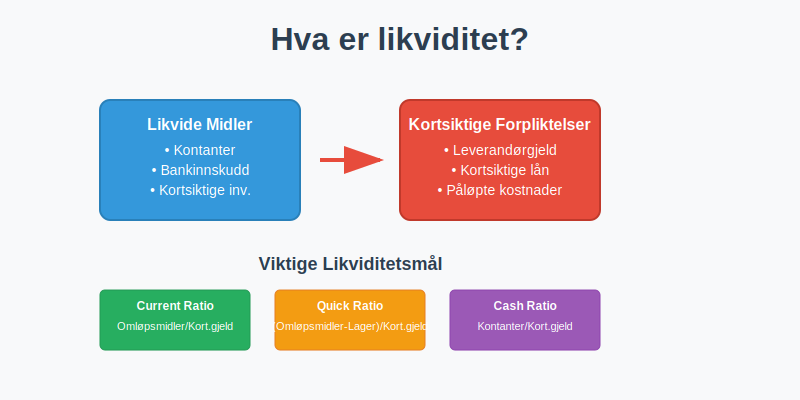
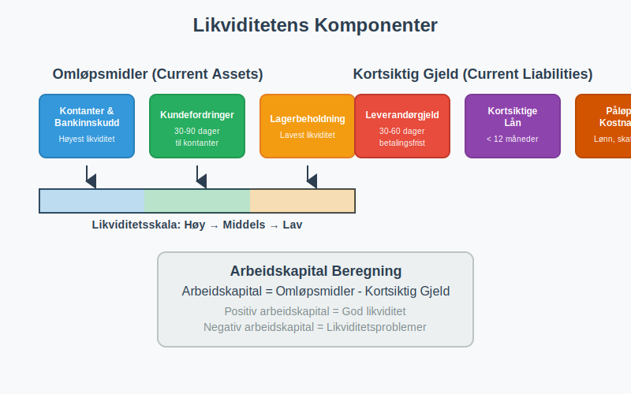
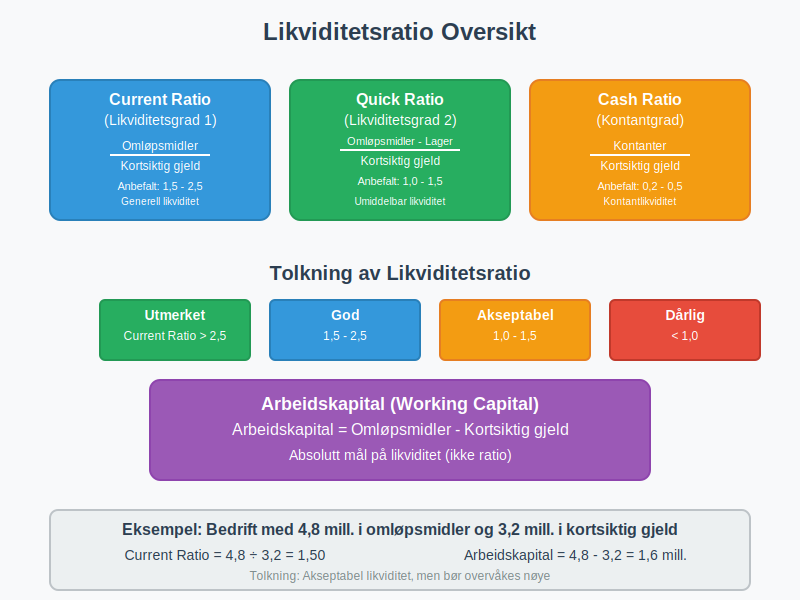
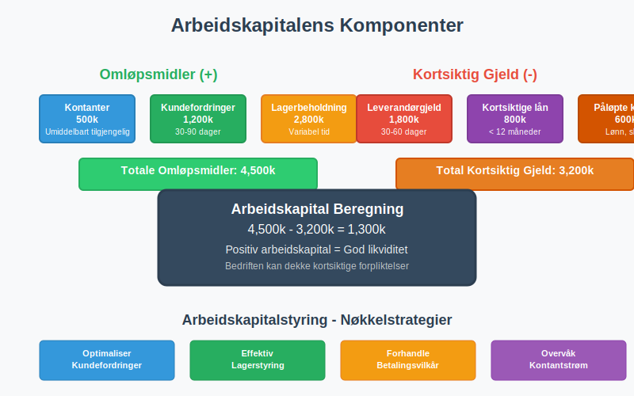
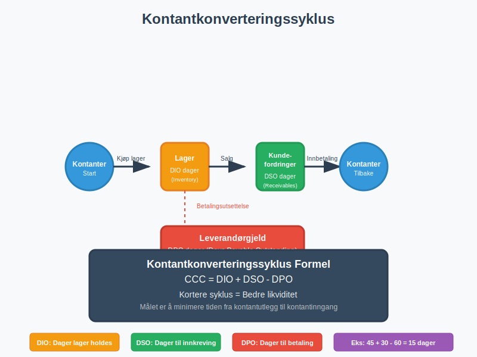
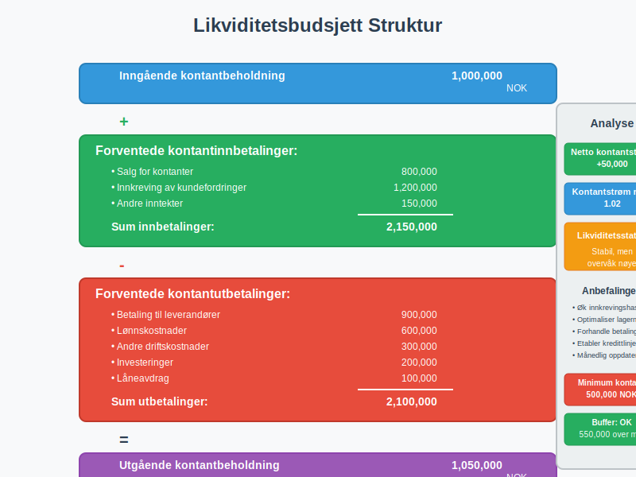
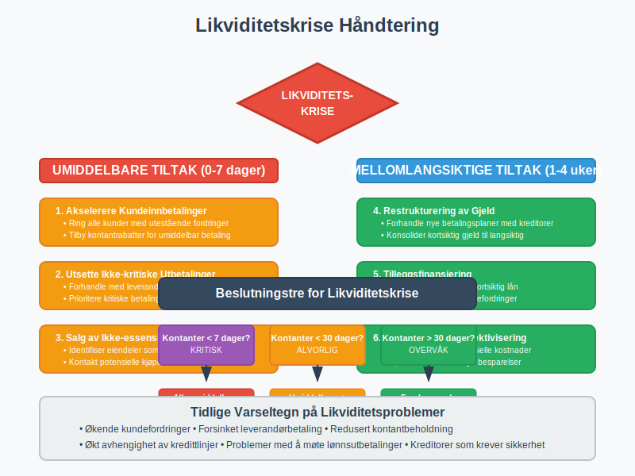
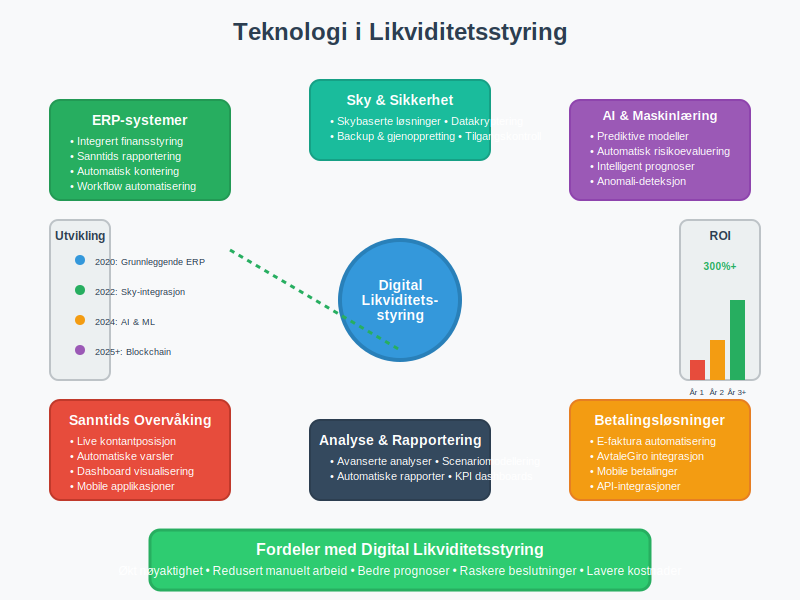
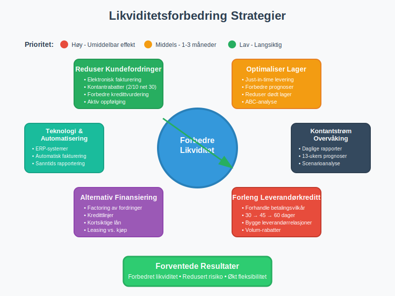

Likviditet er et av de mest kritiske konseptene innen regnskap og finansstyring. Det refererer til en bedrifts evne til å møte sine kortsiktige finansielle forpliktelser når de forfaller, uten å måtte selge langsiktige eiendeler eller skaffe ekstern finansiering på ugunstige vilkår. Likviditet er fundamentalt for enhver virksomhets overlevelse og vekst.
For å forstå likviditet fullt ut, er det essensielt å ha kunnskap om kontantstrøm, som danner grunnlaget for likviditetsstyring. Likviditet er også nært knyttet til arbeidskapital, som representerer forskjellen mellom omløpsmidler og kortsiktig gjeld.

Seksjon 1: Grunnleggende Likviditetsbegreper
1.1 Definisjon og Betydning
Likviditet måler hvor lett en eiendel kan konverteres til kontanter uten betydelig verditap. På bedriftsnivå handler det om å ha tilstrekkelig likvide midler for å dekke løpende utgifter og uventede kostnader.
Likviditet kan kategoriseres i tre hovedtyper:
- Kontantlikviditet: Umiddelbart tilgjengelige kontanter og bankinnskudd
- Markedslikviditet: Evnen til å kjøpe eller selge eiendeler raskt uten å påvirke prisen betydelig
- Finansieringslikviditet: Tilgang til ekstern finansiering når det trengs
1.2 Likviditetens Komponenter

Likviditet består av flere nøkkelkomponenter som sammen danner bedriftens finansielle fleksibilitet:
Omløpsmidler (Current Assets):
- Kontantbeholdning og bankinnskudd
- Kundefordringer
- Lagerbeholdning
- Kortsiktige investeringer
- Forskuddsbetalte kostnader
Kortsiktig Gjeld (Current Liabilities):
- Leverandørgjeld
- Kortsiktige lån
- Påløpte kostnader
- Forskudd fra kunder
Seksjon 2: Likviditetsmåling og Nøkkeltall
2.1 Primære Likviditetsratio
Likviditetsanalyse baserer seg på flere kritiske nøkkeltall som gir innsikt i bedriftens finansielle helse:

| Ratio | Formel | Tolkning | Anbefalt Nivå |
|---|---|---|---|
| Current Ratio | Omløpsmidler ÷ Kortsiktig gjeld | Generell likviditet | 1,5 - 2,5 |
| Quick Ratio | (Omløpsmidler - Lager) ÷ Kortsiktig gjeld | Umiddelbar likviditet | 1,0 - 1,5 |
| Cash Ratio | Kontanter ÷ Kortsiktig gjeld | Kontantlikviditet | 0,2 - 0,5 |
| Working Capital | Omløpsmidler - Kortsiktig gjeld | Absolutt likviditet | Positivt |
2.2 Current Ratio (Likviditetsgrad 1)
Current Ratio er det mest brukte likviditetsmålet og beregnes som:
Current Ratio = Omløpsmidler ÷ Kortsiktig gjeld
Dette forholdet viser bedriftens evne til å dekke kortsiktige forpliktelser med omløpsmidler. En ratio på 2,0 betyr at bedriften har dobbelt så mye i omløpsmidler som kortsiktig gjeld.
Tolkning av Current Ratio:
- Under 1,0: Potensielle likviditetsproblemer
- 1,0 - 1,5: Akseptabel likviditet, men krever overvåking
- 1,5 - 2,5: God likviditet
- Over 3,0: Mulig ineffektiv kapitalbruk
2.3 Quick Ratio (Likviditetsgrad 2)
Quick Ratio gir et mer konservativt mål på likviditet ved å ekskludere lager:
Quick Ratio = (Omløpsmidler - Lagerbeholdning) ÷ Kortsiktig gjeld
Dette målet er særlig relevant fordi lager kan være vanskelig å konvertere til kontanter raskt uten verditap.
2.4 Arbeidskapitalanalyse
Arbeidskapital er forskjellen mellom omløpsmidler og kortsiktig gjeld og representerer den kapitalen som er tilgjengelig for daglig drift:
Arbeidskapital = Omløpsmidler - Kortsiktig gjeld

Seksjon 3: Kontantstrømanalyse og Likviditet
3.1 Kontantstrømmens Rolle
Kontantstrømoppstillingen er et kritisk verktøy for likviditetsanalyse. Den viser faktiske kontantbevegelser og gir innsikt i bedriftens evne til å generere kontanter fra drift.
Kontantstrøm fra drift er særlig viktig for likviditetsvurdering fordi den viser om bedriften kan generere tilstrekkelig kontanter fra kjernevirksomheten.
3.2 Kontantkonverteringssyklus
Kontantkonverteringssyklusen måler hvor lang tid det tar å konvertere investeringer i lager og kundefordringer tilbake til kontanter:

Kontantkonverteringssyklus = DIO + DSO - DPO
Hvor:
- DIO (Days Inventory Outstanding): Gjennomsnittlig antall dager lager holdes
- DSO (Days Sales Outstanding): Gjennomsnittlig antall dager for å innkreve kundefordringer
- DPO (Days Payable Outstanding): Gjennomsnittlig antall dager før leverandørgjeld betales
3.3 Beregning av Kontantkonverteringssyklus
| Komponent | Formel | Beskrivelse |
|---|---|---|
| DIO | (Gjennomsnittlig lager ÷ Varekostnad) × 365 | Dager lager holdes |
| DSO | (Gjennomsnittlig kundefordringer ÷ Kreditsalg) × 365 | Dager til innkreving |
| DPO | (Gjennomsnittlig leverandørgjeld ÷ Innkjøp) × 365 | Dager til betaling |
Seksjon 4: Likviditetsplanlegging og -styring
4.1 Likviditetsbudsjett
Et likviditetsbudsjett er et kritisk verktøy for å forutse fremtidige kontantbehov og sikre tilstrekkelig likviditet. Det inkluderer:

Inngående kontantbeholdning
- Forventede kontantinnbetalinger
- Salg for kontanter
- Innkreving av kundefordringer
- Andre inntekter
- Forventede kontantutbetalinger
- Betaling til leverandører
- Lønnskostnader
- Andre driftskostnader
- Investeringer
- Låneavdrag = Utgående kontantbeholdning
4.2 Likviditetsstyring Strategier
Kortsiktige Strategier:
- Optimalisering av kundereskontro
- Effektiv lagerstyring
- Forhandling av betalingsvilkår med leverandører
- Bruk av factoring for rask kontantinngang
Langsiktige Strategier:
- Etablering av kredittlinjer
- Diversifisering av finansieringskilder
- Investering i likvide verdipapirer
- Implementering av kontantstyringssystemer
4.3 Likviditetskriser og Håndtering

Når bedrifter møter likviditetsproblemer, finnes flere handlingsalternativer:
Umiddelbare Tiltak:
- Akselerering av kundeinnbetalinger
- Utsettelse av ikke-kritiske utbetalinger
- Salg av ikke-essensielle eiendeler
- Forhandling med kreditorer
Mellomlangsiktige Tiltak:
- Restrukturering av gjeld
- Tilleggsfinansiering
- Kostnadskutt
- Forbedring av driftskontantstrøm
Seksjon 5: Bransjespesifikke Likviditetshensyn
5.1 Detaljhandel
I detaljhandel er likviditetsstyring kritisk på grunn av:
- Sesongvariasjoner i salg
- Høy lageromsetning
- Kontantintensive transaksjoner
- Behov for datakasse og kontanthåndtering
5.2 Tjenesteyting
Tjenestebedrifter har ofte:
- Lavere lagerbehov
- Høyere andel kundefordringer
- Mer forutsigbare kontantstrømmer
- Behov for å håndtere forskuddsbetaling
5.3 Produksjon
Produksjonsbedrifter må håndtere:
- Komplekse lagersykluser
- Høye investeringer i anleggsmidler
- Sesongvariasjoner
- Lange produksjonssykluser
Seksjon 6: Teknologi og Likviditetsstyring
6.1 Moderne Likviditetsstyring
Dagens bedrifter benytter avanserte teknologier for likviditetsstyring:

Digitale Verktøy:
- ERP-systemer for integrert finansstyring
- Automatiserte kontantprognoser
- Sanntids kontantposisjon
- API-integrasjoner med banker
Betalingsløsninger:
- Elektronisk fakturering
- Avtalegiro for forutsigbare innbetalinger
- Mobile betalingsløsninger
- Automatiserte betalingspåminnelser
6.2 Kunstig Intelligens og Maskinlæring
AI og maskinlæring revolusjonerer likviditetsstyring gjennom:
- Prediktive kontantstrømmodeller
- Automatisk risikoevaluering
- Optimalisering av betalingstidspunkter
- Intelligent kredittstyring
Seksjon 7: Regulatoriske Aspekter
7.1 Norske Regnskapsstandarder
I Norge må bedrifter følge regnskapsloven og god regnskapsskikk når det gjelder likviditetsrapportering.
Krav til Likviditetsrapportering:
- Kontantstrømoppstilling for store foretak
- Noter om likviditetsrisiko
- Segmentrapportering av kontantstrømmer
- Opplysninger om kredittfasiliteter
7.2 Internkontroll og Likviditet
Internkontroll av likviditet inkluderer:
- Daglig kontantrapportering
- Autorisasjonsnivåer for utbetalinger
- Bankavstemming
- Segregering av oppgaver
- Regelmessig gjennomgang av kredittlinjer
Seksjon 8: Praktiske Eksempler og Case Studies
8.1 Case: Likviditetsanalyse av Norsk Detaljhandel
La oss analysere likviditeten til en fiktiv norsk detaljhandelsbedrift:
Bedrift A - Finansielle Data (i tusen NOK):
| Post | Beløp |
|---|---|
| Kontanter og bankinnskudd | 500 |
| Kundefordringer | 1,200 |
| Lagerbeholdning | 2,800 |
| Andre omløpsmidler | 300 |
| Totale omløpsmidler | 4,800 |
| Leverandørgjeld | 1,800 |
| Kortsiktige lån | 800 |
| Annen kortsiktig gjeld | 600 |
| Total kortsiktig gjeld | 3,200 |
Likviditetsanalyse:
Current Ratio = 4,800 ÷ 3,200 = 1,50
Quick Ratio = (4,800 - 2,800) ÷ 3,200 = 0,63
Cash Ratio = 500 ÷ 3,200 = 0,16
Arbeidskapital = 4,800 - 3,200 = 1,600
Tolkning:
- Current Ratio på 1,50 indikerer akseptabel likviditet
- Quick Ratio på 0,63 viser avhengighet av lageromsetning
- Lav Cash Ratio indikerer behov for bedre kontantstyring
- Positiv arbeidskapital gir finansiell fleksibilitet
8.2 Forbedring av Likviditet

Konkrete Tiltak for Bedrift A:
-
Redusere kundefordringer:
- Implementere elektronisk fakturering
- Tilby kontantrabatter
- Forbedre kredittvurdering
-
Optimalisere lager:
- Implementere just-in-time levering
- Forbedre etterspørselsprognoser
- Redusere dødt lager
-
Forhandle betalingsvilkår:
- Forlenge leverandørkreditt
- Etablere avtalegiro med kunder
- Bruke factoring ved behov
Seksjon 9: Fremtidige Trender i Likviditetsstyring
9.1 Digitalisering og Automatisering
Fremtidens likviditetsstyring vil være preget av:
- Sanntids kontantsynlighet på tvers av alle kontoer og valutaer
- Automatiserte kontantprognoser basert på historiske data og AI
- Integrerte betalingsplattformer som optimaliserer kontantstrømmer
- Blockchain-baserte betalinger for raskere oppgjør
9.2 Bærekraftig Likviditetsstyring
ESG-hensyn påvirker også likviditetsstyring:
- Grønne finansieringsalternativer
- Bærekraftige leverandørkjeder
- Klimarisiko i likviditetsplanlegging
- Rapportering av bærekraftige kontantstrømmer
9.3 Regulatoriske Endringer
Kommende regulatoriske endringer som kan påvirke likviditetsstyring:
- Økte rapporteringskrav for ESG
- Nye standarder for kontantstrømrapportering
- Strengere krav til likviditetsreserver
- Digitale valutaer og deres påvirkning
Konklusjon
Likviditet er fundamentet for enhver vellykket bedrift. Det handler ikke bare om å overleve kortsiktige utfordringer, men om å skape finansiell fleksibilitet som muliggjør vekst og verdiskaping. Effektiv likviditetsstyring krever:
- Kontinuerlig overvåking av likviditetsnøkkeltall
- Proaktiv planlegging gjennom likviditetsbudsjetter
- Diversifiserte finansieringskilder for å redusere risiko
- Teknologisk støtte for sanntids innsikt og automatisering
- Integrert tilnærming som kobler likviditet til overordnet forretningsstrategi
Ved å mestre likviditetsstyring kan bedrifter ikke bare sikre sin finansielle stabilitet, men også posisjonere seg for langsiktig suksess i et stadig mer komplekst forretningslandskap.
For å få en helhetlig forståelse av bedriftens finansielle helse, bør likviditetsanalyse alltid ses i sammenheng med lønnsomhetsanalyse, soliditetsanalyse, og overordnet finansregnskap.